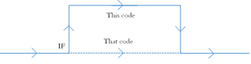

Branching
The basic concept of control flow is branching; making your code follow different paths based on the logic of your program. This is an essential part of programming, and you’ll be using it constantly in the future.
If Statements
The basic form of branching is an "if" statement, which simply evaluates an expression. If that expression evaluates to true, it allows a branch of code to run. They’re very simple to use: you type the keyword "if," followed by a Boolean expression in parenthesis, and finally the brackets defining the branch (scope) of code to be run. If there is only one line of code in your "if" branch, the brackets can be omitted.
A Boolean expression or statement is any combination of objects, and operators that will evaluate to true or false. This can include simply "true" or "false," Boolean variables, functions that return Boolean values, and comparisons between values. The most basic comparison is equals to, which is performed by the comparison operator, "==." Note that this has a very different meaning than the assignment operator ("="). As you may have guessed, there are several other operators for other types of comparison...
| Operator | Use |
| == | Equal to |
| != | Not equal to |
| > | Greater than |
| < | Less than |
| >= | Greather than or equal to |
| =< | Less than or equal to |
And, Or, and Not
Of course, you’re not limited to one comparison or test per "if" statement. You can chain Boolean statements together with the "and" (&&) and "or" (||) operators. You’ve probably heard of this before—the "and" operator will evaluate to true if both sides of the operator evaluate to true, whereas the "or" operator will evaluate to true if either side evaluates to true.
To use these operators, you must have a complete Boolean statement on each side. Hence, you can’t just add another comparison operator to test, for example, if a variable is between a value (i.e. you must do "var >= 5 && var <=10" rather than "var >= 5 && <= 10").
The "not" (!) operator, on the other hand, is added to a single Boolean statement, and it simply flips the evaluation from true to false or vice versa.
Furthermore, there is a technically defined order of operators for these statements, but if you don't want to memorize that long list, you can remember that regardless of specific precedence, logically, the "not" operator is evaluated first, then "and," and finally "or."
Finally, you can chain still more Boolean expressions to test by simply adding more of these operators in sequence.
5 == 5 && 0 <= 12
Will evaluate to true, as both 5 == 5 and 0 <= 12 are true.
(10 / 2) <= 5 || 3 % 2 == 0
Will also evaluate to true, even though 3 % 2 does not equal 0.
8 != 8 && 7 * 2 == 14
Will evaluate to false, as 8 != 8 is false.
5 == 5 && 2 – 4 <= 0 || 1 > 5
This will evaluate to true: first, the "and" is evaluated, and both statements are true, so that portion evaluates to true. Then, the "or" is evaluated, and since the left expression was true, the statement evaluates to true even though 1 is not greater than 5.
If and Else
When you use an "if" statement, it will test the Boolean expression you give it, and if it is true, it will execute the code in the specified branch. However, if the expression is false, nothing will happen at all—your program will simply skip the if block.
Most of the time, you’re probably going to want some logic to happen on "true," and something else to happen on "false." This decision can be achieved through the combination of "if" and "else" statements. An "else" statement simply runs its block of code when the "if" statement above it does not trigger. To use an "else" block, simply add the keyword "else" after the end of an "if" block, and curly brackets to define the "else" block. (again, if there is only one statement in the block, these can be omitted).
Additionally, you can add another "if" statement right onto the else block by adding the keyword "if" and another Boolean expression. This is called an else/if statement (often shortened to "elif"). The logic is as follows: the original "if" statement performs its test, and if it does not trigger (evaluates to "false"), your program will go to the second statement (the first "elif" statement), and evaluate that next. If the second statement also does not trigger, it will go on to the third, and so on, until it either runs out of statements or gets to a catch-all "else" block.
if(5 == 9) {
// this will not trigger
} else {
// this will trigger
}
if(variable == thing) {
// this may or may not trigger
}
else if(variable == otherThing) {
// this may trigger if the first one does not trigger
}
else {
// this will trigger if neither of the first two do
}
Nesting Conditionals
You will often want to test multiple conditions, executing some paths for all cases, some paths from other cases, or a variety of other less straightforward logic paths. You achieve this logic by nesting conditional statements—simply adding more if/else statements within parent ones. This is very self-explanatory—you can just nest more statements within another's code block.
if(thisValue) {
// do something
if(otherThing == 5) {
// do another thing
}
}
Switch Statements
With your current knowledge, to choose a code path from several different options, you’d have to write a long chain of if/else statements. There’s a better way: the switch statement. The switch statement takes a character or integer value and quite easily chooses a block of code corresponding to its value.
To declare a switch statement, type the keyword "switch" and the variable you want to switch on in parenthesis. Then define a block of code where you define your "cases." Each "case" statement defines a possible value that the switch statement will consider, as well as the block of code that will be run if that case is chosen. To add a case, simply type the keyword "case," the integer or character value you want to test for, and a colon (brackets optional). Next, add the code you want to run in that case, and end it with the keyword "break." "Break" tells the program that you are done with that case, and break out of the switch statement entirely.
switch(charVar) {
case ‘a’:
// do things
break;
case ‘b’:
// do other things
break;
}
However, you don’t technically have to include a break statement—if you don’t, your program will simply continue executing down the switch statement, which you may or may not intend. Here’s an example that uses this feature to run the same code if a few different possibilities are true...
switch(charVar) {
case ‘1’:
case ‘a’:
case ‘A’:
// do something if charVar holds the characters '1,' 'a,' or 'A.'
break;
}
This process can also be used to implement logic like this, which will increment "count" different amounts based on which case is chosen. If case 3 is chosen, if will run all three cases, whereas if one is chosen, it will only run one...
switch(intVar) {
case 3:
count++;
case 2:
count++;
case 1:
count++;
break;
}
The last thing you need to know about switch statements is how to create a catch-all case, like a basic "else" clause. To do this, simply add another case, but instead of using the keyword "case," use the keyword "default." Just like "else" statements, a "default" case is not required.
switch(intVar) {
case 1:
// do stuff
break;
default:
// this will run if none of the other cases are chosen
break;
}
Boolean Functions
Boolean functions are just like any other functions you’ve seen, except they specifically have the return type "bool." This makes them very useful, as they can be used as Boolean expressions, acting as the returned value.
bool testEqual(int a, int b) {
return a == b;
}
int main() {
int x = 7;
int y = 13;
if(testEqual(x,y) && x < y) {
cout << x << “ equals “ << y << endl;
} else {
cout << x << “ does not equal “ << y << endl;
}
}